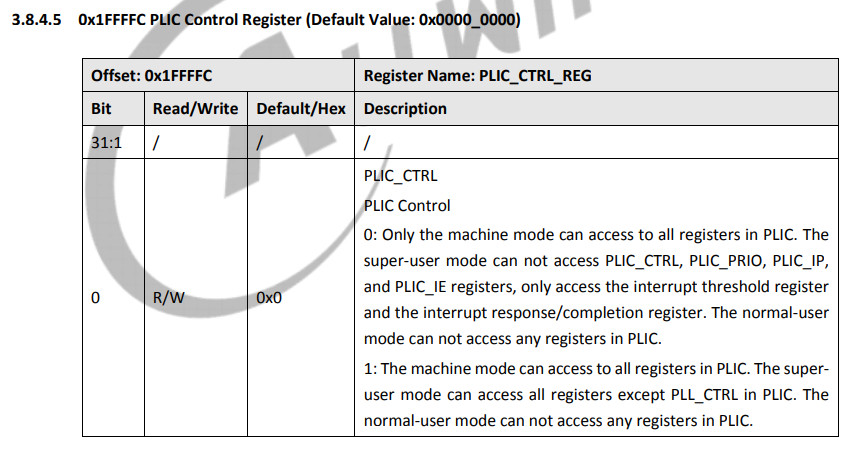

Steward
分享是一種喜悅、更是一種幸福
掌機 - Gaviar (小志掌機) - 解決NR_IRQS: 0, nr_irqs: 0, preallocated irqs: 0, Oops - load access fault [#1]問題
問題如下：
[ 0.000000] Linux version 5.4.61 (steward@debian) (riscv64-unknown-linux-gnu-gcc (C-SKY RISCV Tools V1.8.4 B20200702) 8.1.0, GNU ld (GNU Binutils) 2.32) #3 PREEMPT Tue Sep 8 21:27:48 CST 2026 [ 0.000000] earlycon: sbi0 at I/O port 0x0 (options '') [ 0.000000] printk: bootconsole [sbi0] enabled [ 0.000000] cma: Reserved 16 MiB at 0x0000000047000000 [ 0.000000] Zone ranges: [ 0.000000] DMA32 [mem 0x0000000040000000-0x0000000047ffffff] [ 0.000000] Normal empty [ 0.000000] Movable zone start for each node [ 0.000000] Early memory node ranges [ 0.000000] node 0: [mem 0x0000000040000000-0x0000000047ffffff] [ 0.000000] Initmem setup node 0 [mem 0x0000000040000000-0x0000000047ffffff] [ 0.000000] elf_hwcap is 0x20112d [ 0.000000] Built 1 zonelists, mobility grouping on. Total pages: 32320 [ 0.000000] Kernel command line: console=ttyS4,115200n8 debug loglevel=7,initcall_debug=1 init=/init earlycon=sbi [ 0.000000] Dentry cache hash table entries: 16384 (order: 5, 131072 bytes, linear) [ 0.000000] Inode-cache hash table entries: 8192 (order: 4, 65536 bytes, linear) [ 0.000000] Sorting __ex_table... [ 0.000000] mem auto-init: stack:off, heap alloc:off, heap free:off [ 0.000000] Memory: 104568K/131072K available (4909K kernel code, 448K rwdata, 1909K rodata, 160K init, 234K bss, 10120K reserved, 16384K cma-reserved) [ 0.000000] SLUB: HWalign=64, Order=0-3, MinObjects=0, CPUs=1, Nodes=1 [ 0.000000] rcu: Preemptible hierarchical RCU implementation. [ 0.000000] Tasks RCU enabled. [ 0.000000] rcu: RCU calculated value of scheduler-enlistment delay is 10 jiffies. [ 0.000000] NR_IRQS: 0, nr_irqs: 0, preallocated irqs: 0 [ 0.000000] Oops - load access fault [#1] [ 0.000000] Modules linked in: [ 0.000000] CPU: 0 PID: 0 Comm: swapper Not tainted 5.4.61 #3 [ 0.000000] sepc: ffffffe000205a12 ra : ffffffe00000b832 sp : ffffffe0006d7e10 [ 0.000000] gp : ffffffe000741948 tp : ffffffe0006dc670 t0 : ffffffe0006d7d70 [ 0.000000] t1 : 0000000000000005 t2 : 000000000000043f s0 : ffffffe0006d7ef0 [ 0.000000] s1 : 0000000000000001 a0 : ffffffd000002080 a1 : 0000000000000002 [ 0.000000] a2 : 0000000000000000 a3 : ffffffd000000000 a4 : 0000000000000020 [ 0.000000] a5 : ffffffffffffffff a6 : ffffffe000577be0 a7 : 0000000000000000 [ 0.000000] s2 : ffffffe0006f4bd8 s3 : ffffffe006e0b318 s4 : ffffffe00075d150 [ 0.000000] s5 : 0000000000000000 s6 : 0000000000000002 s7 : ffffffe0005f3c78 [ 0.000000] s8 : ffffffe000621920 s9 : ffffffe0007488a8 s10: 0000000000000001 [ 0.000000] s11: 0000000000200000 t3 : ffffffd004000000 t4 : 9000000004fffcc7 [ 0.000000] t5 : 0000000000000003 t6 : ffffffe0006d7d3c [ 0.000000] sstatus: 0000000200000100 sbadaddr: 0000000010002080 scause: 0000000000000005 [ 0.000000] random: get_random_bytes called from init_oops_id+0x26/0x38 with crng_init=0 [ 0.000000] ---[ end trace 0000000000000000 ]--- [ 0.000000] Kernel panic - not syncing: Attempted to kill the idle task! [ 0.000000] ---[ end Kernel panic - not syncing: Attempted to kill the idle task! ]---
解法如下：
首先看到Crash PC位址是位於0x205a12
[ 0.000000] sepc: ffffffe000205a12 ra : ffffffe00000b832 sp : ffffffe0006d7e10 [ 0.000000] sstatus: 0000000200000100 sbadaddr: 0000000010002080 scause: 0000000000000005
定位副程式
$ riscv64-unknown-linux-gnu-addr2line -e vmlinux -f -C 0xffffffe000205a12
plic_toggle.isra.2
irq-sifive-plic.c:?
查看Device Tree
$ vim arch/riscv/boot/dts/sunxi/sun20iw1p1.dtsi
plic0: interrupt-controller@10000000 {
從OpenSBI列印0x10002080內容，發現內容都是0
M-mode read 0x10002080 => 0 S-mode read 0x10002080 => 0
開始定位權限問題，發現PLIC_CTRL_REG需要設定才可以存取PLIC內容

於是在OpenSBI跳轉到Kernel前，先設定PLIC存取權限，就可以解掉Crash問題
*(volatile uint32_t *)0x101ffffc = 1;
Baudrate 115200bps
[ 0.000000] Linux version 5.4.61 (steward@debian) (riscv64-unknown-linux-gnu-gcc (C-SKY RISCV Tools V1.8.4 B20200702) 8.1.0, GNU ld (GNU Binutils) 2.32) #1 PREEMPT Thu Sep 10 22:35:38 CST 2026 [ 0.000000] earlycon: sbi0 at I/O port 0x0 (options '') [ 0.000000] printk: bootconsole [sbi0] enabled [ 0.000000] cma: Reserved 16 MiB at 0x0000000047000000 [ 0.000000] Zone ranges: [ 0.000000] DMA32 [mem 0x0000000040000000-0x0000000047ffffff] [ 0.000000] Normal empty [ 0.000000] Movable zone start for each node [ 0.000000] Early memory node ranges [ 0.000000] node 0: [mem 0x0000000040000000-0x0000000047ffffff] [ 0.000000] Initmem setup node 0 [mem 0x0000000040000000-0x0000000047ffffff] [ 0.000000] elf_hwcap is 0x20112d [ 0.000000] Built 1 zonelists, mobility grouping on. Total pages: 32320 [ 0.000000] Kernel command line: console=ttyS4,115200n8 debug loglevel=7,initcall_debug=1 init=/init earlycon=sbi [ 0.000000] Dentry cache hash table entries: 16384 (order: 5, 131072 bytes, linear) [ 0.000000] Inode-cache hash table entries: 8192 (order: 4, 65536 bytes, linear) [ 0.000000] Sorting __ex_table... [ 0.000000] mem auto-init: stack:off, heap alloc:off, heap free:off [ 0.000000] Memory: 104568K/131072K available (4909K kernel code, 449K rwdata, 1909K rodata, 160K init, 234K bss, 10120K reserved, 16384K cma-reserved) [ 0.000000] SLUB: HWalign=64, Order=0-3, MinObjects=0, CPUs=1, Nodes=1 [ 0.000000] rcu: Preemptible hierarchical RCU implementation. [ 0.000000] Tasks RCU enabled. [ 0.000000] rcu: RCU calculated value of scheduler-enlistment delay is 10 jiffies. [ 0.000000] NR_IRQS: 0, nr_irqs: 0, preallocated irqs: 0 [ 0.000000] plic: mapped 200 interrupts with 1 handlers for 2 contexts. [ 0.000000] riscv_timer_init_dt: Registering clocksource cpuid [0] hartid [0] [ 0.000000] clocksource: riscv_clocksource: mask: 0xffffffffffffffff max_cycles: 0x588fe9dc0, max_idle_ns: 440795202592 ns [ 0.000125] sched_clock: 64 bits at 24MHz, resolution 41ns, wraps every 4398046511097ns [ 0.008238] riscv_timer_clockevent depends on broadcast, but no broadcast function available [ 0.021298] clocksource: timer: mask: 0xffffffff max_cycles: 0xffffffff, max_idle_ns: 79635851949 ns [ 0.043416] Calibrating delay loop (skipped), value calculated using timer frequency.. 48.00 BogoMIPS (lpj=240000) [ 0.053948] pid_max: default: 32768 minimum: 301 [ 0.060648] Mount-cache hash table entries: 512 (order: 0, 4096 bytes, linear) [ 0.068014] Mountpoint-cache hash table entries: 512 (order: 0, 4096 bytes, linear) [ 0.089491] ASID allocator initialised with 65536 entries [ 0.095919] rcu: Hierarchical SRCU implementation. [ 0.105840] devtmpfs: initialized [ 0.342131] random: get_random_u32 called from bucket_table_alloc.isra.27+0x10a/0x12c with crng_init=0 [ 0.349219] clocksource: jiffies: mask: 0xffffffff max_cycles: 0xffffffff, max_idle_ns: 19112604462750000 ns [ 0.368572] futex hash table entries: 256 (order: 0, 6144 bytes, linear) [ 0.384847] pinctrl core: initialized pinctrl subsystem [ 0.401201] NET: Registered protocol family 16 [ 0.425372] DMA: preallocated 256 KiB pool for atomic allocations [ 0.435759] cpuidle: using governor menu [ 0.864565] rtc_ccu: sunxi ccu init OK [ 0.943050] clock: sunxi ccu init OK [ 0.955128] clock: sunxi ccu init OK [ 1.281595] sun6i-dma 3002000.dma-controller: sunxi dma probed [ 1.316158] iommu: Default domain type: Translated [ 1.322135] sunxi iommu: irq = 4 [ 1.336606] SCSI subsystem initialized [ 1.343999] usbcore: registered new interface driver usbfs [ 1.350350] usbcore: registered new interface driver hub [ 1.356590] usbcore: registered new device driver usb [ 1.362847] videodev: Linux video capture interface: v2.00 [ 1.376396] Advanced Linux Sound Architecture Driver Initialized. [ 1.389471] Bluetooth: Core ver 2.22 [ 1.393475] NET: Registered protocol family 31 [ 1.397995] Bluetooth: HCI device and connection manager initialized [ 1.404467] Bluetooth: HCI socket layer initialized [ 1.409454] Bluetooth: L2CAP socket layer initialized [ 1.414767] Bluetooth: SCO socket layer initialized [ 1.421697] pwm module init! [ 1.438662] g2d 5410000.g2d: Adding to iommu group 0 [ 1.447448] G2D: rcq version initialized.major:252 [ 1.459566] clocksource: Switched to clocksource riscv_clocksource [ 1.644760] sun8iw20-pinctrl 2000000.pinctrl: initialized sunXi PIO driver [ 1.679602] NET: Registered protocol family 2 [ 1.693720] tcp_listen_portaddr_hash hash table entries: 256 (order: 0, 4096 bytes, linear) [ 1.702402] TCP established hash table entries: 1024 (order: 1, 8192 bytes, linear) [ 1.710560] TCP bind hash table entries: 1024 (order: 1, 8192 bytes, linear) [ 1.718069] TCP: Hash tables configured (established 1024 bind 1024) [ 1.725104] UDP hash table entries: 256 (order: 1, 8192 bytes, linear) [ 1.732064] UDP-Lite hash table entries: 256 (order: 1, 8192 bytes, linear) [ 1.740853] NET: Registered protocol family 1 [ 1.771587] workingset: timestamp_bits=62 max_order=15 bucket_order=0 [ 1.892320] squashfs: version 4.0 (2009/01/31) Phillip Lougher [ 1.901056] ntfs: driver 2.1.32 [Flags: R/W]. [ 2.831877] io scheduler mq-deadline registered [ 2.836472] io scheduler kyber registered [ 2.848914] [DISP]disp_module_init [ 2.858080] disp 5000000.disp: Adding to iommu group 0 [ 3.319244] display_fb_request,fb_id:0 [ 3.325176] [DISP] Fb_copy_boot_fb,line:1449: [ 3.325230] no boot_fb0 [ 3.335539] disp_al_manager_apply ouput_type:0 [ 3.341621] [DISP] lcd_clk_config,line:774: [ 3.341861] disp 0, clk: pll(72000000),clk(72000000),dclk(6000000) dsi_rate(72000000) [ 3.341861] clk real:pll(288000000),clk(288000000),dclk(6000000) dsi_rate(0) [ 3.366295] [DISP]disp_module_init finish [ 3.376543] sunxi_sid_init()783 - insmod ok [ 3.397789] uart uart0: uart0 supply uart not found, using dummy regulator [ 3.407627] sw_uart_request_gpio()1273 - UART0 devm_pinctrl_get() failed! return -19 [ 3.415548] uart0: ttyS0 at MMIO 0x2500000 (irq = 18, base_baud = 1500000) is a SUNXI [ 3.429644] sun8iw20-pinctrl 2000000.pinctrl: 2000000.pinctrl supply vcc-pb not found, using dummy regulator [ 3.444651] uart uart4: uart4 supply uart not found, using dummy regulator [ 3.454608] uart4: ttyS4 at MMIO 0x2501000 (irq = 22, base_baud = 1500000) is a SUNXI [ 3.471324] printk: console [ttyS4] enabled setup baud 115200 parity n bits 8, flow n [ 3.471324] printk: console [ttyS4] enabled [ 3.480395] printk: bootconsole [sbi0] disabled [ 3.480395] printk: bootconsole [sbi0] disabled [ 3.499934] misc dump reg init [ 3.523752] libphy: Fixed MDIO Bus: probed [ 3.536492] ehci_hcd: USB 2.0 'Enhanced' Host Controller (EHCI) Driver [ 3.544162] sunxi-ehci: EHCI SUNXI driver [ 3.554895] get ehci0-controller wakeup-source is fail. [ 3.562094] sunxi ehci0-controller don't init wakeup source [ 3.568767] [sunxi-ehci0]: probe, pdev->name: 4101000.ehci0-controller, sunxi_ehci: 0xffffffe00076b730, 0x:ffffffd004067000, irq_no:2e [ 3.582892] [sunxi-ehci0]: Not init ehci0 [ 3.590936] get ehci1-controller wakeup-source is fail. [ 3.598042] sunxi ehci1-controller don't init wakeup source [ 3.604712] [sunxi-ehci1]: probe, pdev->name: 4200000.ehci1-controller, sunxi_ehci: 0xffffffe00076bec0, 0x:ffffffd00406b000, irq_no:31 [ 3.619088] sunxi-ehci 4200000.ehci1-controller: 4200000.ehci1-controller supply drvvbus not found, using dummy regulator [ 3.634144] sunxi-ehci 4200000.ehci1-controller: 4200000.ehci1-controller supply hci not found, using dummy regulator [ 3.649553] sunxi-ehci 4200000.ehci1-controller: EHCI Host Controller [ 3.657523] sunxi-ehci 4200000.ehci1-controller: new USB bus registered, assigned bus number 1 [ 3.668805] sunxi-ehci 4200000.ehci1-controller: irq 49, io mem 0x04200000